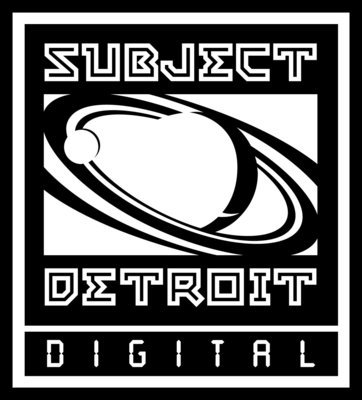
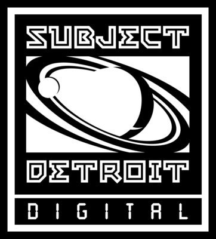

Dj Bone es uno de los djs y productores de la vieja escuela underground de Detroit. Cuando tenía 16 años comenzó a asistir al mítico Music Institute que fue algo así como la meca de los primeros productores y Djs del techno de Detroit.Empezó su carrera como dj en The Shelter(Detroit) y a partir de entonces sus labores mezcladoras fueron requeridas dentro y fuera de sus fronteras. A mediados de los 90 Laurent Garnier se convirtió en su cicerone en el viejo continente cuando lo invitó a pinchar al Rex Club de París. También ha sentado cátedra como "true dj" en clubs con pedigrí como el The End de Mr C o el Tresor alemán. Se convierte oficialmente en activista del techno una vez empieza a modelar su sello Subject: Detroit (con subsello incorporado, Encounter).
Artista del dia
DJ Bone New Post
 
